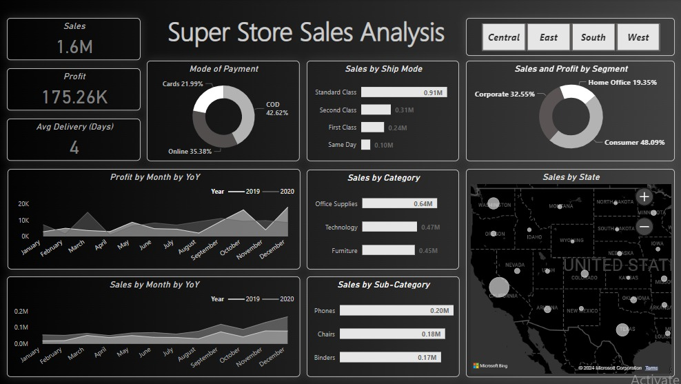
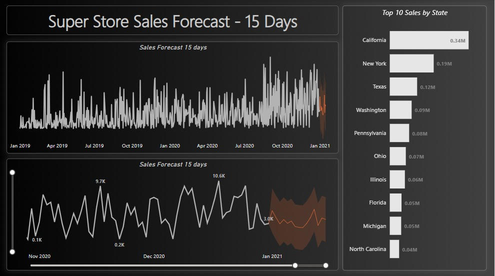

Project-6
SuperStore Sales Analysis & Forecasting || Power Bi

Objective:
Analyzed and visualized SuperStore sales data using Power BI, uncovering actionable insights for strategic decision-making, and implementing sales forecasting for the next 15 days based on 2 years of historical data.
Key Stages:
-
Data Import and Cleaning:
Imported SuperStore sales data into Power BI.
Conducted data cleaning to handle missing values and inconsistencies. -
Data Transformation:
Created calculated columns and measures using DAX (Data Analysis Expressions) to enhance data granularity.
Derived additional metrics, such as average time to deliver products. -
Data Visualization:
Designed a comprehensive dashboard comprising: Overview cards for key metrics: Total Sales, Profit, and Avg Delivery Days.
Geographic visualizations showing sales distribution across regions.
Time-based trends using line charts and area charts.
Category-wise performance visualized through bar and donut charts.
-
Customer Segmentation:
Utilized Power BI's segmentation tools to categorize customers based on purchasing behavior and mode of payment.
Implemented visualizations to highlight high-value and at-risk customer segments.
Showcased top 10 performing States in terms of sales.
-
Sales Forecasting:
Leveraged historical data spanning 2 years for accurate forecasting.
Utilized forecasting models to predict upper-bound, lower-bound, and expected sales for the next 15 days.
Displayed the forecasted sales through visualizations, providing a strategic outlook for short-term planning.
Key Insights:
-
Regional Sales Dominance:
The West Region exhibited the highest number of sales, with California being the primary contributor. -
Shipping Preferences:
Customers predominantly opt for standard shipping over other shipping methods. -
Sales Trend Over Years:
2020 outperformed 2019 in terms of sales, with critical peaks observed in March-September and December. -
Segment-wise Sales-Profit Distribution:
Consumer segment holds the highest Sales-Profit percent share at 49%, followed by the Corporate segment at 33%. -
Top Sales Categories:
The top three sales categories are Office Supplies, Technology, and Furniture.
Factors to Improve:
-
Card Discount Strategy:
Introduce more card discounts to boost card payment rates. -
Strategic Offers:
Incorporate enticing offers, especially during lower-performing months, to stimulate revenue generation. -
Root Cause Analysis for Profit Dips:
Focus on investigating and understanding the root causes behind profit dips in specific months, particularly in comparison to the previous year.
Factors to Improve:
-
Main Dashboard:
 -
Forecasting:

Conclusion:
The SuperStore Sales Analysis unveiled key insights ” West Region dominance, shipping preferences, and segment-wise trends. Notably, 2020 outperformed 2019, with critical peaks observed.
Consumer segment led in Sales-Profit percent share. The top categories ” Office Supplies, Technology, and Furniture” highlight strategic focus.
To enhance performance, focus on boosting card payment rates, introducing targeted offers in low-performing months, and conducting root cause analysis for profit dips.
This analysis equips the business for strategic decision-making and sustained growth.